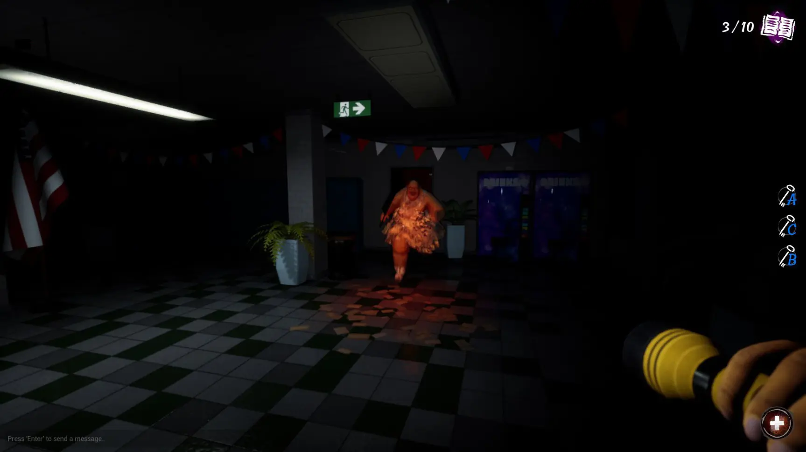
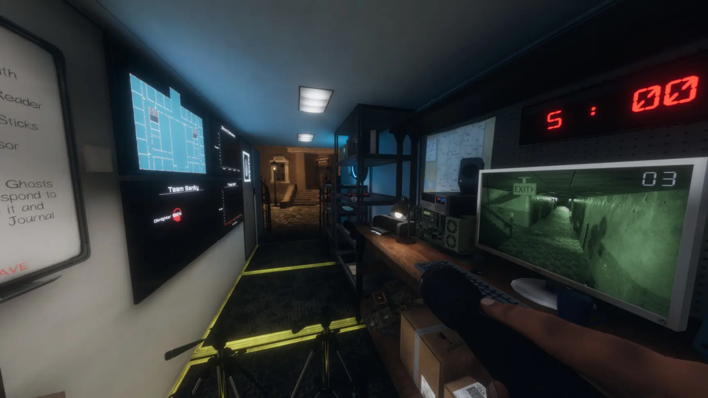
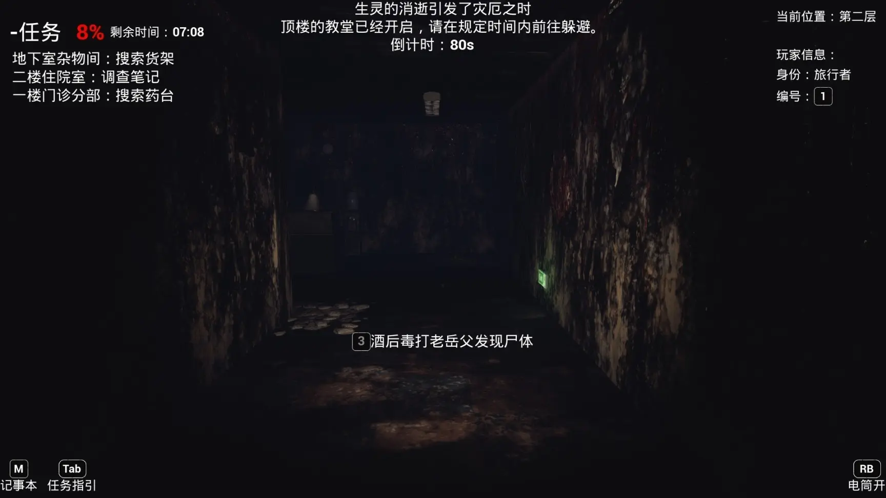

推荐一些联机恐怖游戏吧，我本人还是很喜欢玩恐怖游戏的特别是和小伙伴一起玩，那种氛围我很喜欢特别是有人遇见鬼如果大叫一声，恐怖且紧张的气氛直接爆炸到极点（就是我，嘿嘿）那么废话不多说，开始吧！
第一款:安抚(pacify)
原价:22元 史低:13
元恐怖系数:⭐⭐⭐
一款小成本的恐怖游戏但游玩的乐趣是非常大的，游戏一共有三张地图分别又不同的“恐怖鬼魂”等着你来探索，玩法不是很难只需要在一关把10个娃娃全部烧掉即可，也会有很多钥匙等着你搜索但在这搜索的过程中鬼就会偷袭你哦（第一关的鬼有两种形态，好坏，坏就直接喊叫并且漂浮就来抓你了）第二关则是一个农夫，农夫这关是给他吃10个毒鸡（毒药在房子里，不过要先拿钥匙）把他晕倒然后拿铲车把他推到外面即可胜利！游戏在前期的氛围还是很不错的，特别是你的队伍里如果有一个胆小的人气氛那是真的好玩，不过到后期基本就免疫鬼那吓人的脸了，第三关就比较恶心了，鬼是一团烟雾很难看见而且长的比前两关吓人许多
（值得注意的一点是，每关游戏的复活方式会不同，这也是安抚的特色啦，并且每关的保命道具也是不同的）
第二款:吞噬(devour)
原价:22元，史低17元
恐怖系数:⭐⭐⭐⭐
一款比安抚更加有趣味的恐怖联机游戏，在游戏中不会只有普通的手电筒，还会有紫外线灯光供你使用，并且游戏到进行到后期时女鬼还会放出小怪来阻止你的进程，紫外线灯只能杀掉小怪不能杀掉女鬼，但可以暂停女鬼的速度（特别是后期，女鬼几乎是飞起来的）。并且吞噬还有各种人物供你选择，有各种天赋等特色来让你的游戏体验更加完美，当然吞噬的女鬼都非常可怕特别是第三关的蜘蛛精，所以想要刺激的小伙伴一定一定要入这个款游戏，目前有三个关卡都非常有意思！
第三款:午餐女士(lunch lady)
原价22元，史低17元
恐怖系数:⭐⭐
相较于前两位这位的恐怖度就有点低了，并且玩法也比较单一就是找钥匙然后拿本子，中间就有个医疗箱之外就没有其他的道具了，但是它的背景故事很搞笑，就是一个学生去学校偷答案然后被食堂大妈逮住了的故事，这个实在是太离谱了（谁家食堂大妈拿个刀追学生的？）最后获得胜利的条件则是把十本作业全部找全并成功逃脱即可，当然这个游戏有一点很有意思，就是女鬼可以远程攻击倒你并且如果身上自带医疗包就可以原地复活，这是前两位都没有的一个小特色啦！
第四款:恐鬼症
原价:47，史低39
恐怖系数:⭐⭐⭐

前三位是被鬼抓而这款游戏则是人抓鬼，游戏里有很多道具供你使用（不过没人只能拿一个）所以多叫点人来一起陪你抓鬼是真的很不错，这里面主要任务是探索鬼屋然后记录鬼的特征即可（游戏里还有专门喊鬼的麦克风，你可以通过麦克风来喊鬼的名字）基本就是西方抓鬼的那种元素，体验起来也是非常不错服务器也可以容纳很多人，如果你的朋友够多，来20多个人那都没有问题等于是抓鬼帮啦。当然身临其境的感觉是很好，但是鬼出现的次数不多外加如果你玩的够好，鬼可能一直都不会狂暴并且这里面的大地图是真的耗时间呢！
第五款:恐惧之间
原价32元，史低22元
恐怖系数:⭐

小成本的恐怖联机游戏，大概上则是与among as相似需要找到潜行在玩家的女鬼或者做完相应的任务即可胜利，女鬼则需要杀光所有好人算胜利。当然我说只是类似狼人杀玩法上还是与among us有所不同的，比如好人阵营如果不做任务左下角的生命值就会慢慢减少最终死亡，所以必须要做任务，并且好人阵营还有一个牧师的职位（相当于预言家）可以查看任何一个人的身份，坏人阵营这方面主要有两个鬼（透视和关灯）需要合理应用自己的能力来杀掉好人方即可！
切记，最好是和一起开黑的小伙伴玩，因为这个游戏都有人开挂（我很不能理解）！并且野房很乱说不了一两句就开始互相交流“厕所”语言了！

评论区